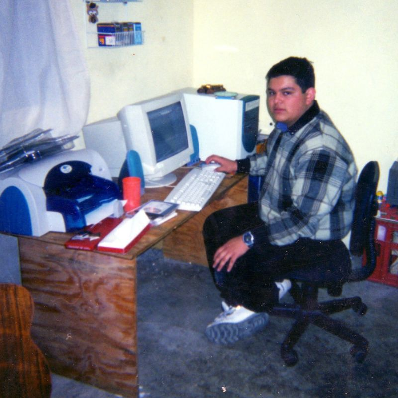

Videojuegos
17 de Agosto, 2025
Era realmente genial la época en la que tenía tiempo suficiente para sumergirme en los videojuegos. No tenía ninguna preocupación mas que seguir avanzando en alguna de esas historias. Me parece que podría definir con claridad la época en la que más disfruté de ese pasatiempo. Fue desde mi entrada al CCH al rededor del año 2001, hasta que me vine a vivir acá con Pá en el año 2008.
Aunque ya llevaba años siendo un asiduo videojugador, mi época en el CCH, me dio la libertad de jugar un poco de todo y además, el tiempo que quisiera. La computadora que tuve en aquél entonces fue la que me permitió experimentar muchos videojuegos que ya nada tenían que ver con lo que estábamos acostumbrados en las consolas, fueran de sobremesa o portátiles.

Hasta ese momento sólo había jugado juegos de Nintendo y uno que otro de MS-DOS. Pero con esa computadora conocí todo tipo de juegos, tanto de PC como de Play Station gracias a los primeros emuladores que encontré en internet.
← Volver a Historias